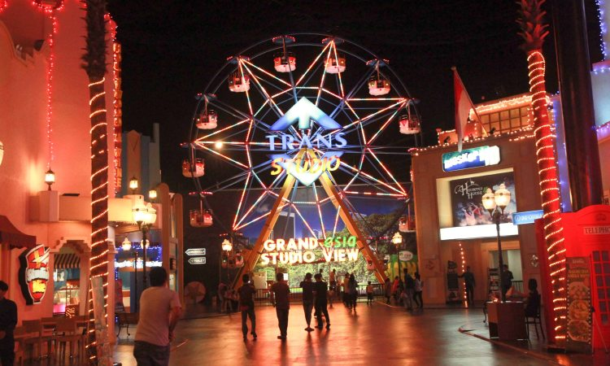
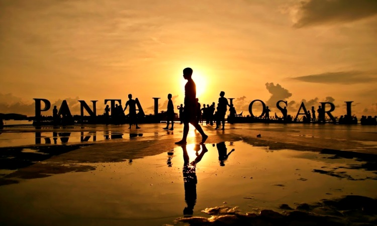
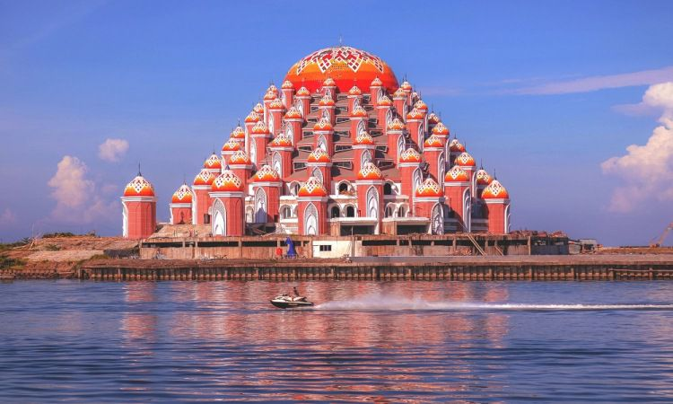
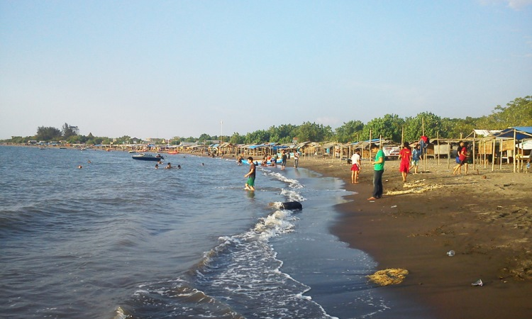

WELLCOME
TO’MAKASSAR CITY
Makassar merupakan kota besar yang terletak di Sulawesi Selatan.
Sebagai tujuan wisata mungkin Anda belum terlalu populer di
banding destinasi lain. Padahal kota ini menyimpan segudang
keunikan serta keindahan di dalamnya. Anda dapat mengeksplore
secara keseluruhan di setiap sudut kota.
GAMBAR WISATA MAKASSAR
TRANS STUDIO
Wisata ini cocok untuk Anda kunjungi bersama keluarga Anda terutama dengan anak Anda. Mengingat selain merupakan tempat bermain tempat ini juga menjadi sarana belajar bagi anak Anda. Bermain dan belajar tentunya sangat baik untuk perkembangan anak Anda.
PANTAI LOSARI
Akan tetapi pada pantai ini Anda akan menemui konsep yang berbeda mengingat pada tempat ini Anda akan melihat banyak beton. Berfungsi sebagai penahan gelombang sekaligus abrasi air laut yang ada di tempat ini.
MESJID 99 KUBAH
Masjid yang berfungsi sebagai tempat ibadah ini telah mampu menarik banyak perhatian dari seluruh kalangan. Bentuk kubah yang kecil-kecil mengelilingi kubah besar masjid tampak sangat eksotik jika dilihat dari Anjungan Losari
TANJUNG BAYANG
Tanjung bayang dikenal memiliki bibir pantai yang sangat luas. Banyak wisatawan memilih datang hanya untuk sekedar santai maupun untuk olahraga. Beragam olahraga di sana begitu ramai seperti berenang, sepak bola serta voli pantai.
Developer by
NIM:17024014013
KELAS:A1
JURUSAN:INFORMATIKA
NIM:17024014005
KELAS:A1
JURUSAN:INFORMATIKA